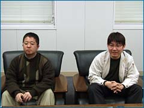
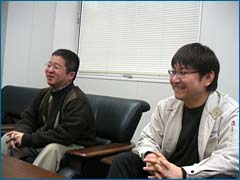

N.O.M 今回の作品ができるまでの経緯はどういったものでしたか？
小金澤 『カスタムロボ』シリーズのこれまでのシステムを生かしつつ、GBAソフトではなく据え置き型で新作を作りたいという声がありました。それで、今回初めてGCで作ることになったんですが、これまで制作してくださっていたノイズさんが、カスタムロボＧＸの追い込み作業でスケジュール的に難しいということで、外部クリエイターと共同でＧＣ版を作ることになり、ご紹介いただいたスタジオフェイクさんにお願いすることになりました。ノイズさんはプロデュース以外の実務も担当されています。
見城 2002年暮れ頃から、４人同時対戦の実験を始めました。それまでシリーズを遊んでくださっているユーザーさんから、そういった要望が数多く寄せられていまして。NINTENDO64ではタッグバトル（注：N64のV2では2on2と呼んでいましたが、今作でタッグバトルに名称を変更しました）までしかできなかったんですよね。
N.O.M これまでのシリーズと違う部分はどこでしょう。
見城 以前、NINTENDO64で最初の『カスタムロボ』を出しました。ストーリー的に直接的な接点はないのですが、『カスタムロボ V2』というゲームがこれの前作にあたります。今作は俯瞰視点(ふかん。上方から見下ろす)だけでなく、一人称視点もオマケとして追加しました。
小金澤 新たに４人同時対戦が可能にもなりました。これまでは２on２もあったんですが、それって交代制の４人プレイで、同時に画面上で戦うのは２人だったりしたんです。でも、今回は、4人が同時に一画面上で戦えるようになりました。
見城 全体的にはちょっと大人向けというか、お兄さんぽい要素を入れることに注意しました。これまでのシリーズは、どうしても低年齢層向けといったイメージがあったようで、内容的に自信があっても、なかなか大人のユーザーさんは手を出しづらかったみたいなんです。キャラクターやシナリオ、効果音などもちょっとSFっぽいカッコよさを出そうということで、全面的に改変しました。
N.O.M 遊ぶにあたっては、まずシナリオモードをやらないといけないんですね。
見城 これはチュートリアルでもあるんですよね。それにしては長いかもしれませんが(笑)。まずシナリオをじっくり遊んでもらって、パーツやシステムに慣れ親しんでほしいということです。ゲームの面白さを理解してもらうためには、まずシナリオからということで。で、最終的にはカスタマイズを自由自在に駆使して、友だち同士の対戦を楽しんでくれたらなと思っています。
|
N.O.M 変更した部分について、もう少し詳しくお願いします。

見城 まず、ロボットは完全に作り直しました。64版はあえてオモチャっぽくデザインしていたんです。それを思い切ってSF風のクールなロボットデザインにしてもらいました。そして、ホロセウムや世界観を含めたすべての部分を変更したんです。やはりユーザー層の拡大が頭にありますから。
小金澤 大人でもこのゲームを好きな人が結構いるんです。でも、「子供向けっぽく見えるゲームをおおっぴらにやるのは恥ずかしい」と言う人もいたりして。それを見返したかったというのもあります(笑)。
N.O.M 任天堂側からの要望はどういったものでしたか？
小金澤 「４人同時対戦」「ビジュアルの全面変更」のふたつが絶対条件でした。これまでのシリーズは国内のみのリリースだったんですが、今回は海外も視野に入っていましたから、そちらにも受け入れられるようなものにしたかったという背景があります。開発には海外の方の意見も多く採り入れていますよ。
見城 イメージを一新したかったので、前作までとは違う会社にサウンドをお願いしたり、新たにムービーを作成したりもしました。カスタムロボを知らない海外の人には、ムービーがあった方がインパクトがあるだろうということで作ったんです。
N.O.M 新ハードでの開発は大変だったと思いますが、いかがですか？
見城 いくつもの会社と組むというのは、僕にとって大きなプロジェクトだったんです。だからこそこれまでのように、うちだけで作っていたらできなかったようないい作品になったと自負しています。４人対戦が入ったり、ビジュアルに凝ったりで、コンピュータ処理の高速化が大変だったようですが、その甲斐あってボリューム的にも質的にも向上したと思います。
小金澤 GCってグラフィックがすごくキレイに出るんですが、細かく表現できすぎてしまって、逆に自分の操作しているロボが分かりにくかったりするという弊害もありました。４人対戦すると誰が誰だか分からなくなってしまうんです(笑)。で、今回は新たに５色の色分けができるようにしました。
見城 見た目はキレイだけど、遊びやすい…というバランスの両立も難しかったです。ドラマ性を出しつつ、シンプルにというのはなかなか両立しがたいものなんですよ。
|
N.O.M 特にユーザーに注目してほしい部分はどこでしょう。
小金澤 今まで以上に子供から大人まで十分に楽しめるというところです。ここは自信があるので、ぜひ遊んでほしいですね。
見城 初心者への導入にはとても気を遣っています。見た目にシステムが難解だと思われてしまうと、どうしても遊んでもらえないですから。ビジュアル的にもだいぶ変わりましたし、これまで「子供っぽい」と敬遠していた人に手に取ってもらいたいですね。ほかにはこういうタイプの対戦シューティングゲームってないと思います。それから今回はOPムービーが２種類あります。テーマソングはdreamさんが歌っているんですが、それに合わせて作られたムービーも非常に秀逸ですので、そこもぜひ注目してください。今のところどこでも発表されておらず、ゲームを買った人だけ見ることができます。
N.O.M 海外進出が決まっているそうですが、反応はいかがですか。
小金澤 実は海外向けと国内向けでは仕様を変えてあるんです。国内版はシナリオ進めていかないと、「対戦」しか遊ばない人は新しいパーツを入手出来ないようになっていますが、海外版はそれがありません。「対戦でもパーツを入手したい」という反応があったようですから(笑)。
見城 新しい試みばかりなので、実際のリリース後の反応が気になりますよ。
小金澤 内容には自信があるんですが、これが実際どう受け入れられるかという部分でちょっとドキドキしています。
N.O.M 発売直前ということで、N.O.M読者にマル秘情報を教えていただけないでしょうか。
見城 昔の作品に出てきた『ヒヨコロボ』というのがいるんですが、今回は『にわとりロボ』として登場します。この３年の間に成長しました。
小金澤 マップのなかに隠してあるので、探してみてくださいね。
N.O.M では最後に、ユーザーへのメッセージをお願いします。

小金澤 今作では、１作目２作目をやっていた人向けの演出があったり、隠しキャラ的な存在やお約束要素があちこちに出てきます。初めてやる人だけでなく、シリーズを通して遊んでくれているユーザーさんに喜ばれるポイントもたくさんありますから、ぜひ楽しんでください。
見城 ビジュアルを一新したので、これまでのユーザーさんは驚かれると思います。でも、内容的には基本を押さえた上でさらにパワーアップしているので、安心して遊べるはずです。雰囲気が変わっても楽しめるものになっていますから、ぜひよろしくお願いします。
N.O.M どうもありがとうございました！
|